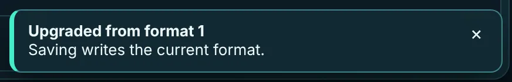
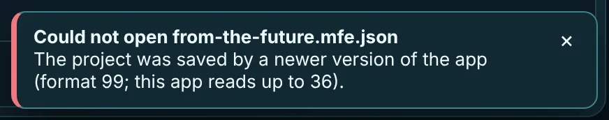
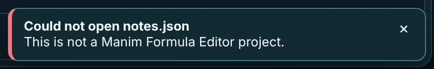

Project files and their format
What the editor writes when you save, what it reads when you open, what a project holds and what it leaves out, and what happens to a file made by an older or a newer editor.
Project files
A project is one text file in JSON, UTF-8, named after the project with the ending
.mfe.json. File ▸ Save As… suggests the name for you: the project’s name in
lower case, with hyphens between its words, so Completing the square becomes
completing-the-square.mfe.json. File ▸ Open… opens the Projects dialog, which
lists the projects of your synced folder; its Other file… button picks a file from anywhere
on your computer, and that is how you open a project you downloaded, such as every example of this documentation
(Projects and files teaches the dialog).
Because it is plain text, a project can be read in any text editor, kept in a version-control system and compared. You do not need to edit it by hand, and the editor does not need you to. Here is a small project to download, open with the editor and read:
This is its top level, with the inside of each section cut short:
{
"format": "manim-formula-editor",
"version": 36,
"meta": { "name": "First transform", "target": "ce", "width": 1920, "height": 1080,
"fps": 60, "background": "#000000", "preamble": "", "duration": null },
"formulas": [ { "id": "f_…", "kind": "math", "name": "step1", "source": "x + 3 = 5", … }, … ],
"tracks": [ { "id": "t_…", "kind": "visual", "name": "Track 2", "hidden": false, "locked": false, … }, … ],
"clips": [ { "id": "c_…", "formulaId": "f_…", "trackId": "t_…", "start": 0, "end": 3.2, … }, … ],
"audioAssets": [],
"audioClips": [],
"relations": [ { "id": "r_…", "fromClipId": "c_…", "toClipId": "c_…", "pairs": [ … ], … }, … ],
"colorMatches": []
}The top of every project says what it is: format is always manim-formula-editor, and
version is the number of the format it was written in (below).
What a project stores
Everything that makes the scene, and nothing that is only how you happen to be looking at it.
| Section | It holds |
|---|---|
meta | The settings of the scene: name, Manim target, size, frame rate, background, LaTeX preamble and duration. They are what File ▸ Project settings… shows. |
formulas | Every object of the Creator: its kind (formula, LaTeX text, font text, brace, shape or line), its name, its LaTeX source and packages, its size and colour, the colour of each glyph, the glyphs hidden at the start, its intro, and a snapshot of its glyphs. |
tracks | The rows of the timeline, top to bottom, each with its name, whether it is visual or audio, and whether it is hidden, muted or locked. |
clips | Each appearance of an object on the timeline: which object, which track, when it starts and ends, its position, scale, rotation, flips, opacity and colour, its intro and outro, whether it starts empty and the glyphs it leaves out of its intro, its animation blocks and, for a brace, a shape or a line, what it is attached to. |
relations | The transformations between clips: the two clips, the window of the transformation, its easing, its default style and path arc, and the pairs of glyphs, with the custom paths you shaped. A style, the relation’s or a pair’s own, is transform, copy, fade or fade_copy. |
audioAssets, audioClips | The recordings the project owns, and their instances on audio tracks, with their trims and volume curves. |
colorMatches | The project’s lists of match colours. |
formulaGroups | The groups of formulas of the Creator’s list. It is left out until you make a group. |
textGeometry | Only in a .mfe.json: the saved shapes of the font texts, so they draw as they were saved with no companion. |
A snapshot of its glyphs. A formula keeps the list of its glyphs as the renderer drew them. Every reference to a glyph in the project, a colour, a pair, a block, is a number in that list, so a project does not depend on which renderer is running when you open it. Canonical index and Glyph order say more.
What a project leaves out
- Preferences. They are the browser’s, not the file’s: Preferences lists them.
- Palettes. Choosing a palette, or applying one, copies plain colour values into the fields of the project. A project keeps no palette and no role names, so it looks the same on a machine that has no such palette.
- How you were looking. The selection, the playhead, the zoom and pan of the Preview, the zoom and the track heights of the timeline, and the undo history are not saved. Open a project and they start afresh.
- An export. A Python file or a video is made from a project; it is not the project. Keep the project.
Packages: .mfe
A project that has audio recordings cannot be a text file: the recordings are bytes. It is saved as a
package, ending in .mfe, which holds the project and every recording it owns, so that a
project and its sound travel in one file. File ▸ Save As… suggests the .mfe ending
for such a project. If you try to save it into a .mfe.json file, the editor refuses:
“A project with recordings, or with more text geometry than a .mfe.json carries, needs a .mfe package destination. Use Save As and keep the .mfe suffix.”
- A package is not a ZIP file and you cannot unzip it. It is one file made for the editor: a header, the project, then the recordings. Open it like any project: File ▸ Open…, then Other file… for a file that is not in your synced folder.
- A project with font texts keeps their shapes inside its
.mfe.json, up to 64 MiB of them. Beyond that it is saved as a package too. - A recording that the browser no longer holds when you save can be left out if you say so: the package then says which, the project opens with that recording marked, and you import it again.
- A project that has no recordings can be saved as a
.mfe.jsonagain with Save As….
Versions and opening older files
The format has a version, a whole number that grows each time a feature needs a field an older editor could misread. The editor always saves the current version, and it opens every version up to the current one.
- An older file is upgraded in memory as it opens, and the editor says so. The file on disk is not touched until you save, and then it is saved in the current format.
- A newer file is refused, with a message that names its version and the newest one this editor reads. Use a newer build of the editor.
- A file that is not a project is refused too, and nothing about the open project changes.
- A package (above) whose project the editor does not read, a newer one say, is refused
with the reason a
.mfe.jsonof that project gets: “Could not open lecture.mfe”, “The project was saved by a newer version of the app (format 99; this app reads up to 36).” A package is called damaged only when the package itself is.



A file that opens can still say “Opened with N issues”: its content breaks a rule the editor checks, such as a glyph that does not exist or two clips on one track that overlap. It opens anyway — the notice is red when one of the issues is an error, amber when they are warnings alone —, and the issues show where they apply: the Animations panel, the timeline, the Python export dialog. Troubleshooting lists the messages.
A number past what the editor’s fields take is one of those errors too, since a file can hold any number: a dashed line whose dashes are shorter than 0.01, the path arc of a relation or of a Morph block past a full turn (360° either way), a scene, a clip or a sound that ends after 24 hours. Bring the value back within that range, in its field or on the timeline, and the error goes.
Which version a feature needs
An editor refuses every file of a later version than its own, whatever the file holds, and this editor always saves the current version, 36: a project saved here does not open in an older build. A feature is part of the format from some version on, so a file older than that version cannot hold it. The versions, in order:
| Format version | Features a file can use |
|---|---|
| 1 to 8 | Formulas, tracks, clips, relations with pairs of glyphs, hidden glyphs, intros and outros, Appear, Disappear, Transform and Morph blocks, how several sources reach one target, match colours, custom paths. |
| 9 to 14 | Objects of several kinds: LaTeX texts, braces with labels, shapes, and Emphasis blocks. |
| 15 to 19 | Copies pairs that remember their principal source, audio tracks and recordings, font texts, their saved shapes inside the file, and groups of blocks. |
| 20 to 25 | Clips locked in the Preview, braces and shapes over several clips, groups of formulas, the fill of a shape and its transform to another target, where a text’s new clips start, and the cross line. |
| 26 to 30 | Lines and arrows, the anchors of their ends, curves and tips, GrowArrow, and the Transform of a line’s ends. |
| 31 | Clips that start empty, and several relations between the same two clips. |
| 32 | A path of its own for one route of a pair (one source glyph on its way to one target glyph), and pairs of one relation that bring the same targets. |
| 33 | Glyphs a clip leaves out of its own intro, besides its formula’s hidden glyphs: a split leaves out of its first half the glyphs that only come on screen after the cut. The style Fade copy, for a relation, a Morph block or a pair. |
| 34 | The camera of the scene: where it frames the scene at the start, target cameras with a name, and camera moves in time. |
| 35 | The Slides mode: pauses and comments at instants of the scene (Slides and the HTML page). |
| 36 | A pause that skips its wait: going on from it, the exported page and the rehearsal jump to where the next animation starts (A pause that skips its wait). |
The format itself
The format is written down, field by field, in
FORMAT.md in the editor’s repository: every
section of a project, the rules that the editor checks when it opens one, the layout of a package, and a table of what each version
changed and how an older file is upgraded. The editor’s own code is the final word: the types in app/src/model/types.ts
and the checks that mirror them in schema.ts. The repository’s examples/ folder holds projects to read
next to it, every one of the current format.